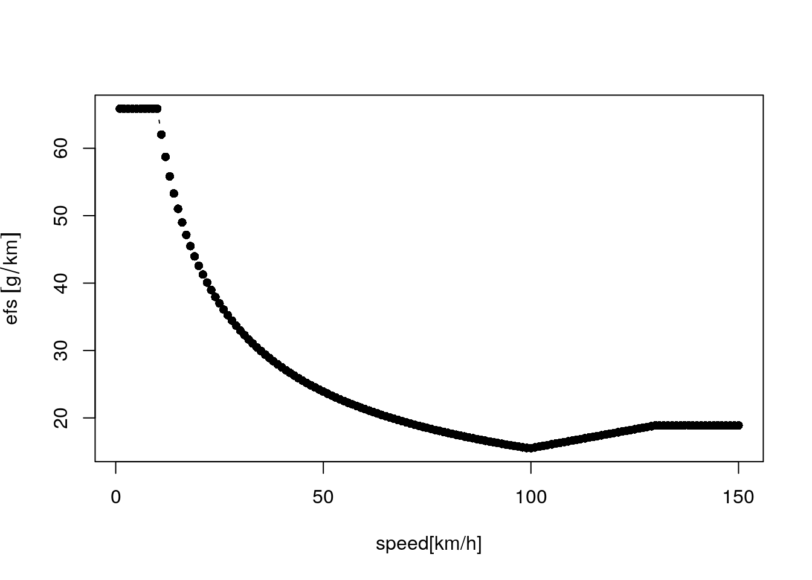
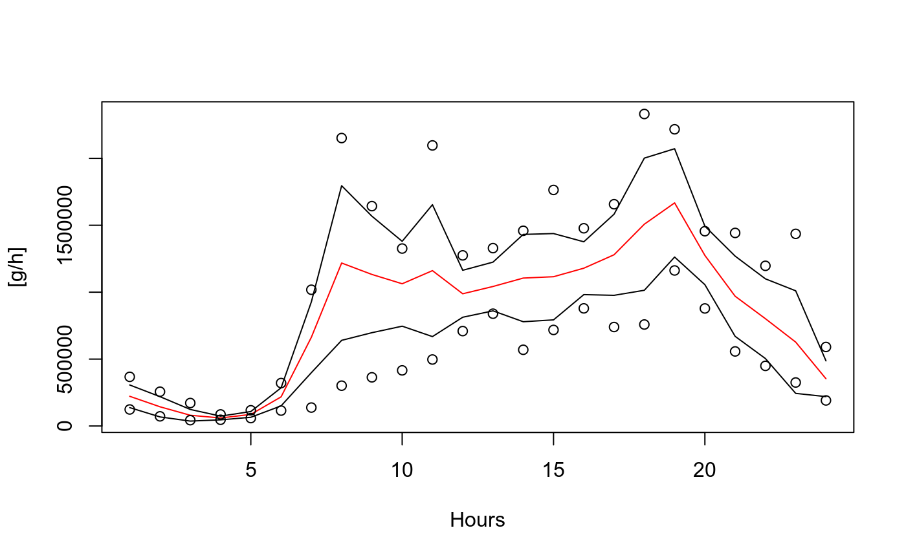
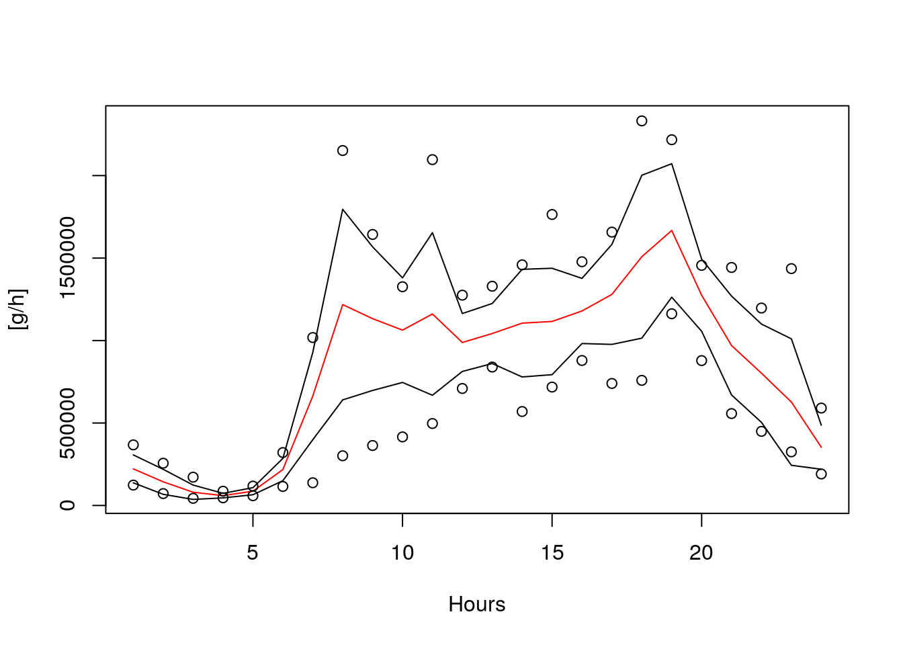
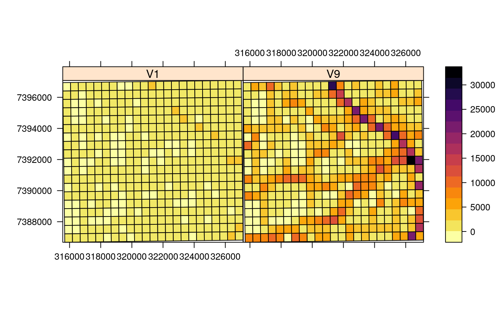

Our paper was just accepted on GMD
https://www.geosci-model-dev-discuss.net/gmd-2017-193/


Vein Package
Vehicular Emissions INventory (VEIN) model.
Please read the documentation.
System requirements
vein imports functions from spatial packages listed below. In order to install these packages, firstly the user must install the requirements mentioned here.
Packages needed
After installing system dependencies, you need these packages:
In order to run the demo, this package is also needed:
Installation
VEIN can be installed via CRAN or github
library(devtools)
install_github("atmoschem/vein")
library(vein)
demo(VEIN)or
install.packages("vein")
library(vein)What is VEIN
Vehicular Emissions Inventories. An R package to estimate vehicular emissions. It currently covers the following pollutants in speed functions:
- Criteria: “CO”, “NOx”, “HC”, “PM”, “CH4”, “NMHC”, “CO2”, “SO2”, “Pb”, “FC” (Fuel Consumption).
- PAH and POP: “indeno(1,2,3-cd)pyrene”, “benzo(k)fluoranthene”, “benzo(b)fluoranthene”, “benzo(ghi)perylene”, “fluoranthene”, “benzo(a)pyrene”, “pyrene”, “perylene”, “anthanthrene”, “benzo(b)fluorene”, “benzo(e)pyrene”, “triphenylene”, “benzo(j)fluoranthene”, “dibenzo(a,j)anthacene”, “dibenzo(a,l)pyrene”, “3,6-dimethyl-phenanthrene”, “benzo(a)anthracene”, “acenaphthylene”, “acenapthene”, “fluorene”, “chrysene”, “phenanthrene”, “napthalene”, “anthracene”, “coronene”, “dibenzo(ah)anthracene”
- Dioxins and Furans: “PCDD”, “PCDF”, “PCB”.
- Metals: “As”, “Cd”, “Cr”, “Cu”, “Hg”, “Ni”, “Pb”, “Se”, “Zn”.
- NMHC:
- ALKANES: “ethane”, “propane”, “butane”, “isobutane”, “pentane”, “isopentane”, “hexane”, “heptane”, “octane”, “TWO_methylhexane”, “nonane”, “TWO_methylheptane”, “THREE_methylhexane”, “decane”, “THREE_methylheptane”, “alcanes_C10_C12”, “alkanes_C13”.
- CYCLOALKANES: “cycloalcanes”.
- ALKENES: “ethylene”, “propylene”, “propadiene”, “ONE_butene”, “isobutene”, “TWO_butene”, “ONE_3_butadiene”, “ONE_pentene”, “TWO_pentene”, “ONE_hexene”, “dimethylhexene”.
- ALKYNES:“ONE_butine”, “propine”, “acetylene”.
- ALDEHYDES: “formaldehyde”, “acetaldehyde”, “acrolein”, “benzaldehyde”, “crotonaldehyde”, “methacrolein”, “butyraldehyde”, “isobutanaldehyde”, “propionaldehyde”, “hexanal”, “i_valeraldehyde”, “valeraldehyde”, “o_tolualdehyde”, “m_tolualdehyde”, “p_tolualdehyde”.
- KETONES: “acetone”, “methylethlketone”.
- AROMATICS: “toluene”, “ethylbenzene”, “m_p_xylene”, “o_xylene”, “ONE_2_3_trimethylbenzene”, “ONE_2_4_trimethylbenzene”, “ONE_3_5_trimethylbenzene”, “styrene”, “benzene”, “C9”, “C10”, “C13”.
Also, somre Brazilian emission factors and speciations for WRF-Chem, mechanisms:
e_eth e_hc3 e_hc5 e_hc8 e_ol2 e_olt e_oli e_iso e_tol e_xyl e_c2h5oh e_ald e_hcho e_ch3oh e_ket E_SO4i E_SO4j E_NO3i E_NO3j E_MP2.5i E_MP2.5j E_ORGi E_ORGj E_ECi E_ECj H2O
What is new?
I decided to jump into a new ‘minor’ version because it brings lots of cool improvements.
- vein imports sf functions.
- R packages -raster-, -rgdal- and -rgeos- not needed anymore.
- vein now imports data-table.
- Add class GriddedEmissionsArray.
- Fix #28, data.table imported in emis_grid. Now it is very fast!
- Fix #49: Documentation in inventory est.
- Fix #50: Fix repetition of x_DF.
- Fix #51: deparse text.
- Fix #52: separate objects in rm with ‘,’
- Fix #55.
- Minor fix on demo(VEIN).
- emis and emis_cold adjust length of ef by length of columns of first element of the list of data-frames.
- Revised all examples.
- returns sf in temp_fact, netspeed and emis_post! (0.3.17)
Check the NEWS
future steps
- Add more support to sf.
- Estimation of evaporative emissions with Copert Tier 3.
- More speciations.
- A book (hopefully released in 2018).
How does it works?
VEIN consist of: “Elaboration of vehicular emissions inventories, consisting in four stages, 1) pre-processing activity data, 2) preparing emissions factors, 3) estimating the emissions and 4) post-processing of emissions in maps and databases.”
This implies the use of several functions in a coordinates ans structured way, therefore it is added the new function inventory which creates a structured set of directories and scripts to run VEIN. Please, open the file ‘main.R’ and run each line to understand VEIN. Remember, if you have doubts with any function, just type ‘?’ with the name of the function. For intance: ?inventory.
library(vein)
inventory(name = file.path(tempdir(), "YourCity"), show.dir = T,
show.scripts = T)## files at /tmp/RtmpveRHsV/YourCity## Directories:
## [1] "/tmp/RtmpveRHsV/YourCity"
## [2] "/tmp/RtmpveRHsV/YourCity/ef"
## [3] "/tmp/RtmpveRHsV/YourCity/emi"
## [4] "/tmp/RtmpveRHsV/YourCity/emi/BUS_01"
## [5] "/tmp/RtmpveRHsV/YourCity/emi/HGV_01"
## [6] "/tmp/RtmpveRHsV/YourCity/emi/LCV_01"
## [7] "/tmp/RtmpveRHsV/YourCity/emi/MC_01"
## [8] "/tmp/RtmpveRHsV/YourCity/emi/PC_01"
## [9] "/tmp/RtmpveRHsV/YourCity/est"
## [10] "/tmp/RtmpveRHsV/YourCity/images"
## [11] "/tmp/RtmpveRHsV/YourCity/network"
## [12] "/tmp/RtmpveRHsV/YourCity/post"
## [13] "/tmp/RtmpveRHsV/YourCity/post/df"
## [14] "/tmp/RtmpveRHsV/YourCity/post/grids"
## [15] "/tmp/RtmpveRHsV/YourCity/post/streets"
## [16] "/tmp/RtmpveRHsV/YourCity/profiles"
## [17] "/tmp/RtmpveRHsV/YourCity/veh"
## Scripts:
## [1] "est/BUS_01_input.R" "est/HGV_01_input.R" "est/LCV_01_input.R"
## [4] "est/MC_01_input.R" "est/PC_01_input.R" "main.R"
## [7] "post.R" "traffic.R"Please, read the examples in the documentation of each function and run the demo.
1) Examples with traffic data:
age functions
data("net")
PC_E25_1400 <- age_ldv(x = net$ldv, name = "PC_E25_1400")## Average age of PC_E25_1400 is 11.17## Number of PC_E25_1400 is 1946.95 * 10^3 vehplot(PC_E25_1400, xlab = "age of use")
##
## Average = 11.17If you want to know the vehicles per street and by age of use, just add the net. Age functions now returns ‘sf’ objects if the net argument is present.
PC_E25_1400net <- age_ldv(x = net$ldv, name = "PC_E25_1400", net = net)## Average age of PC_E25_1400 is 11.17## Number of PC_E25_1400 is 1946.95 * 10^3 vehsp::spplot(as(PC_E25_1400net, "Spatial"),
c("PC_E25_1400_1", "PC_E25_1400_9"),
main = "PC by age of use", scales = list(draw = T),
col.regions = rev(cptcity::cpt()))
temporal factors and netspeed
data("net")
data("pc_profile")
pc_week <- temp_fact(net$ldv+net$hdv, pc_profile)
dfspeed <- netspeed(pc_week, net$ps, net$ffs, net$capacity, net$lkm, alpha = 1.5)
class(dfspeed)## [1] "Speed" "data.frame"plot(dfspeed, xlab = "Hours", ylab = "Speed [km/h]") 
If you want ot check the speed at different hours by street, just add net:
dfspeednet <- netspeed(pc_week, net$ps, net$ffs, net$capacity, net$lkm,
alpha = 1.5, net = net)
sp::spplot(as(dfspeednet, "Spatial"),
c("S1", "S9"), scales = list(draw = T),
col.regions = rev(cptcity::cpt()))
2) Emission Factors
V <- 0:150
ef1 <- ef_ldv_speed(v = "PC",t = "4S", cc = "<=1400", f = "G", eu = "PRE",
p = "CO")
efs <- EmissionFactors(ef1(1:150))
plot(Speed(1:150), efs, xlab = "speed[km/h]", type = "b", pch = 16)
3) Estimation of emissions
euro <- c(rep("V", 5), rep("IV", 5), rep("III", 5), rep("II", 5),
rep("I", 5), rep("PRE", 15))
lef <- lapply(1:40, function(i) {
ef_ldv_speed(v = "PC", t = "4S", cc = "<=1400", f = "G",
eu = euro[i], p = "CO", show.equation = FALSE) })
E_CO <- emis(veh = PC_E25_1400, lkm = net$lkm, ef = lef, speed = dfspeed,
profile = pc_profile)## Number of columns of 'veh' is different than length of 'ef'## adjusting length of ef to the number of colums of 'veh'## 139727.29 kg emissions in 24 hours and 7 daysplot(E_CO, xlab = "Hours", ylab = "[g/h]")
4) Post Emissions
E_CO_STREETS <- emis_post(arra = E_CO, pollutant = "CO", by = "streets_wide")make a grid. If you plan to run WRF, use:
- eixport::wrf_put
- eixport::as4wrf
- vein::emis_wrf will be deprecated.
data(net)
E_CO_STREETSnet <- emis_post(arra = E_CO, pollutant = "CO", by = "streets_wide",
net = net)
g <- make_grid(net, 1/102.47/2) #500m in degrees
E_CO_g <- emis_grid(spobj = E_CO_STREETSnet, g = g, sr= 31983)## Transforming spatial objects to 'sr'sp::spplot(as(E_CO_g, "Spatial"),
c("V1", "V9"), scales = list(draw = T),
col.regions = rev(cptcity::cpt()))
Thanks and enjoy VEIN!
Citation
If you use VEIN, please, cite it:
Ibarra-Espinosa, S., Ynoue, R., O’Sullivan, S., Pebesma, E., Andrade, M. D. F., and Osses, M. (2017). VEIN v0.2.2: an R package for bottom-up Vehicular Emissions Inventories Geosci. Model Dev. Discus, https://doi.org/10.5194/gmd-2017-193, in accepted, 2017.
Communications, doubts etc
- There is a group about this VEIN here https://groups.google.com/forum/#!forum/veinmodel
- Eventually you can ask on Eart Science Stackoverflow,
Issues
If you encounter any issues while using VEIN, please submit your issues to: https://github.com/atmoschem/vein/issues/
If you have any suggestions just let me know to sergio.ibarra@usp.br.
Contributing
Please, read this guide. Contributions of all sorts are welcome, issues and pull requests are the preferred ways of sharing them. When contributing pull requests, please follow the Google’s R Style Guide. This project is released with a Contributor Code of Conduct. By participating in this project you agree to abide by its terms.